In sessions 3-4, we have learnt to fit GLMs to species presence-absence data. GLMs are only one, very simple parametric method for fitting SDMs. There are many more algorithms out there (Elith et al. 2006; Thuiller et al. 2009; Guisan, Thuiller, and Zimmermann 2017). Here, we will get to know a few of them. Remember the five general model building steps: (i) conceptualisation, (ii) data preparation, (iii) model fitting, (iv) assessment and (v) predictions. These are the same for all SDMs independent of the particular algorithm used.
For a first overview of potential algorithms have a look at the different response surfaces illustrated below.
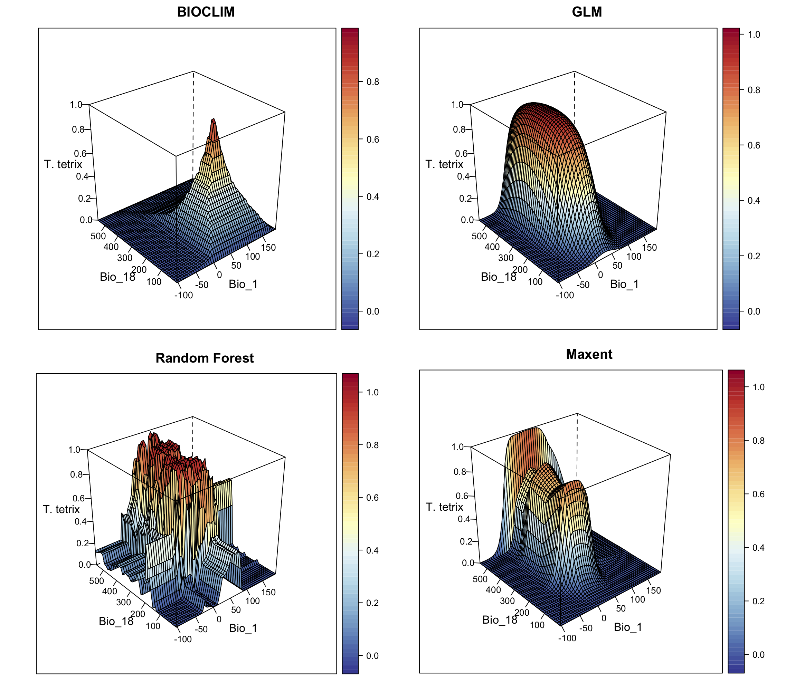
Today, we will work with dataset of British breeding and wintering birds that we also used in Practical 2 (Gillings et al. 2019). The data contain breeding bird records in 20-year cycles (1968-1972, 1988-1991, 2008-2011 and) wintering bird records in 30-year cycles (1981/1982-1983-1984, 2007/2008-2010/2011) at a 10 km spatial resolution throughout Britain, Ireland, the Isle of Man and the Channel Islands. The data are available through the British Trust of Ornithology (www.bto.org) and can be downloaded here. If you were following the previous practicals, you should have the data on your local machine (e.g. in data folder).
# Read in UK bird data (you may have to adapt the filepath)
bird_dist <- read.table('data/distributions.csv',header=T, sep=',', stringsAsFactors = F)
bird_spp <- read.table('data/species_lookup.csv',header=T, sep=',', stringsAsFactors = F)
bird_coords <- read.table('data/grid_square_coordinates_lookup.csv',header=T, sep=',', stringsAsFactors = F)
grid_ref <- read.table('data/UK_10km_gridref.csv',header=T,sep=',')We concentrate on the most recent atlas period 2008-2011. As in the last weeks, I chose to work with the Ring Ouzel as example.
library(raster)
# Coordinate reference
proj_UK <- '+proj=tmerc +lat_0=49 +lon_0=-2 +k=0.9996012717 +x_0=400000 +y_0=-100000 +ellps=airy +datum=OSGB36 +units=m +no_defs'
# Define the spatial background of UK
bg <- subset(bird_dist,period=="2008-11" & resolution==10 & island=='B')[,c(4:6)]
bg <- bg[!duplicated(bg$grid),]
bg <- merge(bg, grid_ref)[,4:5]
bg$val <- 1
bg <- rasterFromXYZ(bg, crs=proj_UK)
# Extract ring ouzel presence data - first, we use data with any possible status information
sp_dat <- subset(bird_dist,speccode==370 & period=="2008-11" & resolution==10 & island=='B')
sp_dat <- merge(sp_dat, grid_ref)[,c('grid','EASTING','NORTHING')]
sp_dat$Turdus_torquatus <- 1
# We extract a second data set with only confirmed breeding occurrences
sp_breed <- subset(bird_dist,speccode==370 & period=="2008-11" & status=='Confirmed' & resolution==10 & island=='B')
sp_breed <- merge(sp_breed, grid_ref)[,c('grid','EASTING','NORTHING')]
sp_breed$Turdus_torquatus <- 1
# Plot ring ouzel presences
par(mfrow=c(1,2))
plot(bg,col='grey',axes=F,legend=F, main='All records')
plot(extend(rasterFromXYZ(sp_dat[,-1]),bg), col='red', legend=F,add=T)
plot(bg,col='grey',axes=F,legend=F, main='Confirmed breeding')
plot(extend(rasterFromXYZ(sp_breed[,-1]),bg), col='red', legend=F,add=T)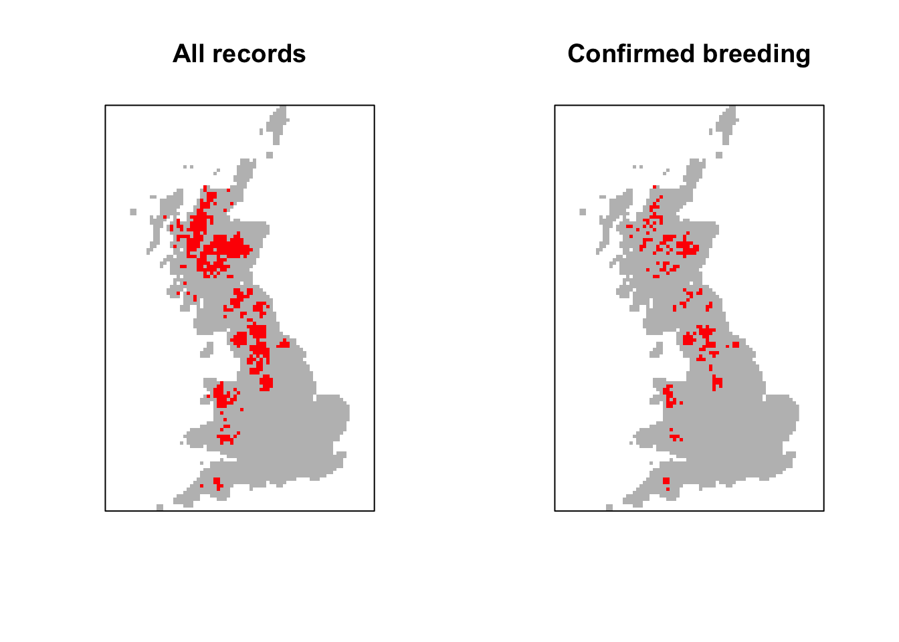
The distribution data cover the entire British Isles. Using adjacent cells in model building can lead to problems with spatial autocorrelation. We thus thin the records using the package spThin (Aiello-Lammens et al. 2015).
library(spThin)
# The spThin package require longitude/latitude coordinates:
sp_temp <- merge(sp_breed, subset(bird_coords,order==1&resolution==10))
# Remove adjacent cells:
xy <- thin(sp_temp, lat.col='lat',long.col='long',spec.col='Turdus_torquatus', thin.par=20,reps=5, write.files=F,locs.thinned.list.return=T)## **********************************************
## Beginning Spatial Thinning.
## Script Started at: Tue Nov 26 08:30:49 2019
## lat.long.thin.count
## 72 73 74
## 2 1 2
## [1] "Maximum number of records after thinning: 74"
## [1] "Number of data.frames with max records: 2"
## [1] "No files written for this run."# Which run yields the most presence records?
which.max(sapply(xy,nrow))## [1] 1# Thin the dataset:
sp_thinned <- merge(sp_temp,data.frame(long=xy[[which.max(sapply(xy,nrow))]]$Longitude, lat=xy[[which.max(sapply(xy,nrow))]]$Latitude),by=c('long','lat'))[,c('grid','EASTING','NORTHING','Turdus_torquatus')]
# Plot atlas and thinned ring ouzel presences
par(mfrow=c(1,2))
plot(bg,col='grey',main='breeding', legend=F)
plot(extend(rasterFromXYZ(sp_breed[,-1]),bg), col='red', legend=F, add=T)
plot(bg,col='grey',main='thinned', legend=F)
plot(extend(rasterFromXYZ(sp_thinned[,-1]),bg), col='red', legend=F, add=T)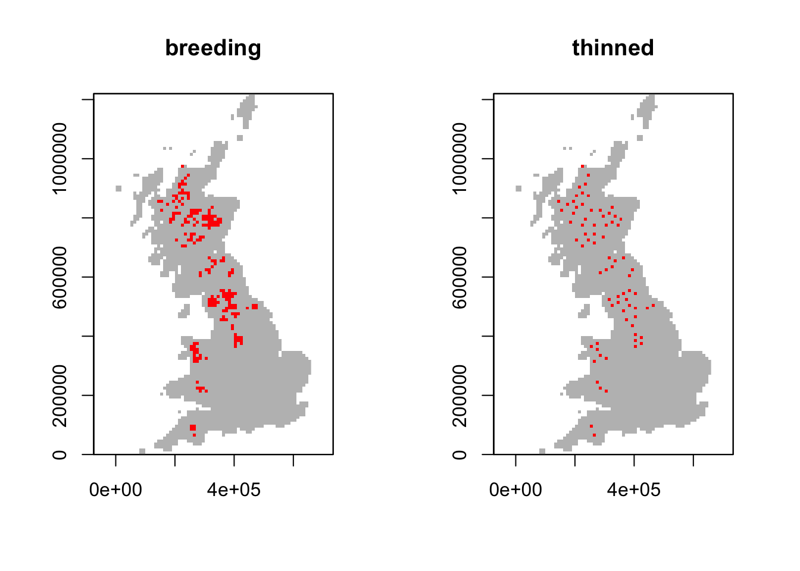
# We can remove the temporary data:
rm(sp_temp)Now, we still need absence data. As the observers made a huge effort for identifying the species, we can safely assume that all cells without Ring Ouzel occurrences are absences. However, as indicated earlier we want to avoid using adjacent cells. Thus, we also thin the absence data.
abs_temp <- data.frame(grid=unique(subset(bird_dist,period=="2008-11" & resolution==10 & island=='B')$grid),Turdus_torquatus=0)
abs_temp <- subset(abs_temp, ! grid %in% unique(sp_dat$grid))
abs_temp <- merge(abs_temp, subset(bird_coords,order==1))
# Remove adjacent cells - this time we take a random set of thinned points
xy <- thin(abs_temp, lat.col='lat',long.col='long',spec.col='Turdus_torquatus', thin.par=20,reps=1, write.files=F,locs.thinned.list.return=T)[[1]]## **********************************************
## Beginning Spatial Thinning.
## Script Started at: Tue Nov 26 08:30:52 2019
## lat.long.thin.count
## 514
## 1
## [1] "Maximum number of records after thinning: 514"
## [1] "Number of data.frames with max records: 1"
## [1] "No files written for this run."# Thin the dataset:
abs_thinned <- merge(abs_temp,data.frame(long=xy$Longitude, lat=xy$Latitude),by=c('long','lat'))
# Combine with National Grid coordinates
abs_thinned <- merge(abs_thinned,grid_ref)[,c('EASTING','NORTHING','Turdus_torquatus')]
sp_thinned <- rbind(sp_thinned[,-1],abs_thinned)
# Remove temporary data
rm(abs_temp,abs_thinned)
plot(bg,col='grey',axes=F,legend=F, main='Confirmed breeding')
plot(extend(rasterFromXYZ(sp_thinned),bg), col=c('red','black'), legend=F,add=T)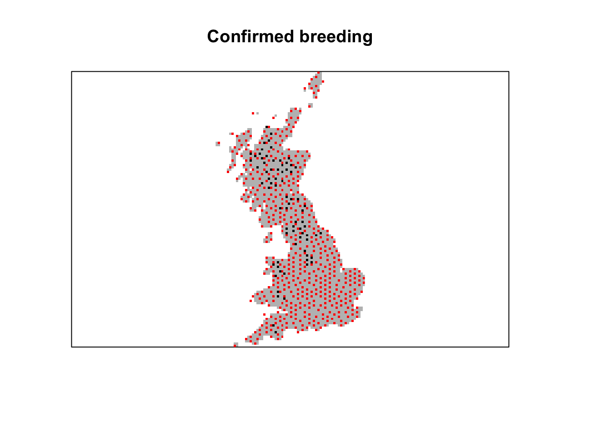
As preparing the data was quite an effort, we better save the object for later use.
save(sp_thinned,file='UK_RingOuzel_thinned.RData')# Please note that you have to set download=T if you haven't downloaded the data before:
bio_curr <- getData('worldclim', var='bio', download=F, lon=-5, lat=55, res=5, path=my_filepath)
# UK extent in lon/lat coordinates
ch_uk <- c(-12, 3, 48, 62)
# Crop and reproject current climate
bio_curr <- crop(bio_curr, ch_uk)
bio_curr <- projectRaster(bio_curr, bg)
bio_curr <- resample(bio_curr, bg)
bio_curr <- mask(bio_curr, bg)sp_thinned <- na.exclude(data.frame(sp_thinned,extract(bio_curr,sp_thinned[,1:2])))As in prac 3, we should take a look at correlation structure between predictor variables as collinearity could be potentially problematic for some of our model algorithms. We will rank the predictors according to their univariate variable importance using the select07() function from Dormann et al. (2013). To do so, please source the function select07() function from prac 3.
library(corrplot)
# We remove strongly correlated variables, keeping those with highest univariate importance:
pred_names <- names(bio_curr)
# Look at correlations:
cor_mat <- cor(sp_thinned[,pred_names], method='spearman')
# Visualise the correlation matrix. For better visibility, we plot the correlation coefficients as percentages.
corrplot.mixed(cor_mat, tl.pos='lt', tl.cex=0.6, number.cex=0.5, addCoefasPercent=T)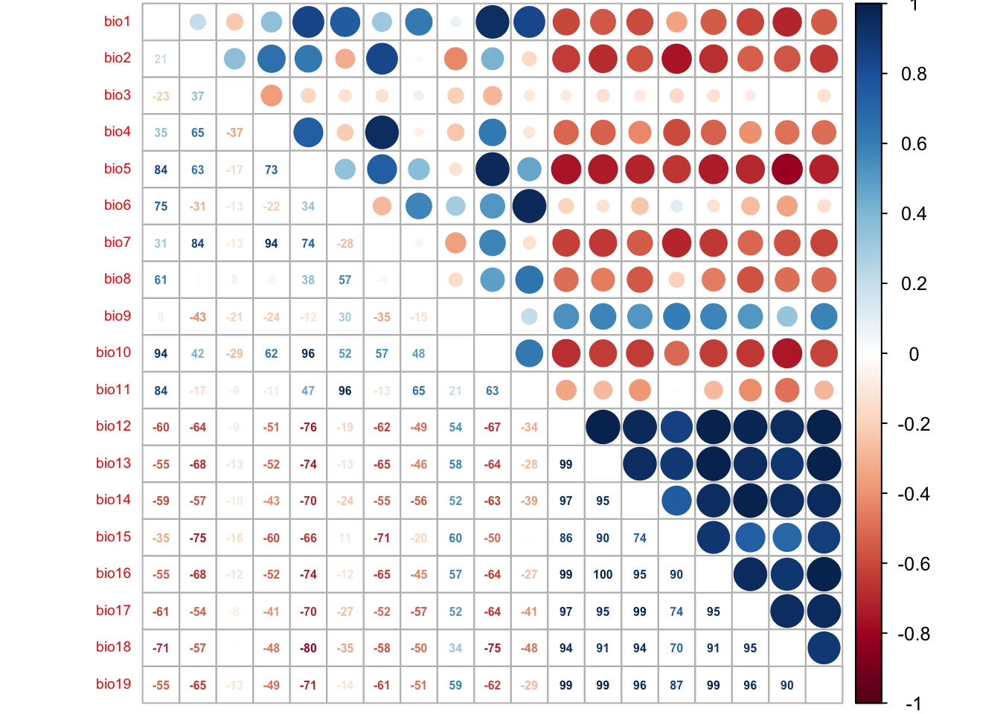
var_sel <- select07(pred_names=pred_names, response_name='Turdus_torquatus', data=sp_thinned, cor_mat=cor_mat, threshold = 0.5)
# For today's session, we will only consider the two most important, weakly correlated variables
my_preds <- var_sel$pred_sel[1:2]You will remember from the last sessions that we should decide on appropriate modelling algorithms during the conceptualisation phase. Let’s assume our study objectives were to compare species-environment relationships and predicted species distributions across several SDM algorithms, for example to quantify the uncertainty due to the model class (Araujo and New 2007; Thuiller et al. 2009; Buisson et al. 2010). We will test several different SDM algorithms that can be broadly classified into profile (envelope and distance-based) methods, regression-based methods and non-parametric machine-learning methods (Guisan, Thuiller, and Zimmermann 2017)(http://rspatial.org/sdm/rst/6_sdm_methods.html). The list of models we treat here is not exhaustive but should give you a rough overview of what concepts and methods are out there. Most of the methods used here are available in the package dismo.
Profile methods constitute the oldest family of SDM algorithms and are the only “true” presence-only methods that do not need any absence or background data. We can distinguish the classical envelope approach and distance-based methods.
You have already met an envelope method: The IUCN range maps are derived by drawing the shortest geographic boundary, a convex hull, around all presence points in space. This is defined as the “extent of occurrence” and is a geographic envelope. Environmental envelopes work in a very similar way, only that we need to define “ecologically sensible” niche axes (environmental predictor variables) before and can then draw a convex hull around all species’ presence points in this environmental space. BIOCLIM is a pioneering envelope approach (Booth et al. 2014). It defines the niche as an n-dimensional, rectangular bounding box, which is of course similar to Hutchinson’s view of the n-dimensional hyperspace (Hutchinson 1957). To reduce sensitivity to outliers, the bounding box can be limited by only considering a certain percentile range (e.g. 5-95%) of the species records along each environmental gradient. In dismo, the BIOCLIM algorithm is implemented such that it will produce continuous probabilities between 0 and 1, indicating how similar/close the environmental conditions are to the median conditions.
library(dismo)
# Fit BIOCLIM model
m_bc <- bioclim(bio_curr[[my_preds]], sp_thinned[sp_thinned$Turdus_torquatus==1,c('EASTING','NORTHING')])
plot(m_bc)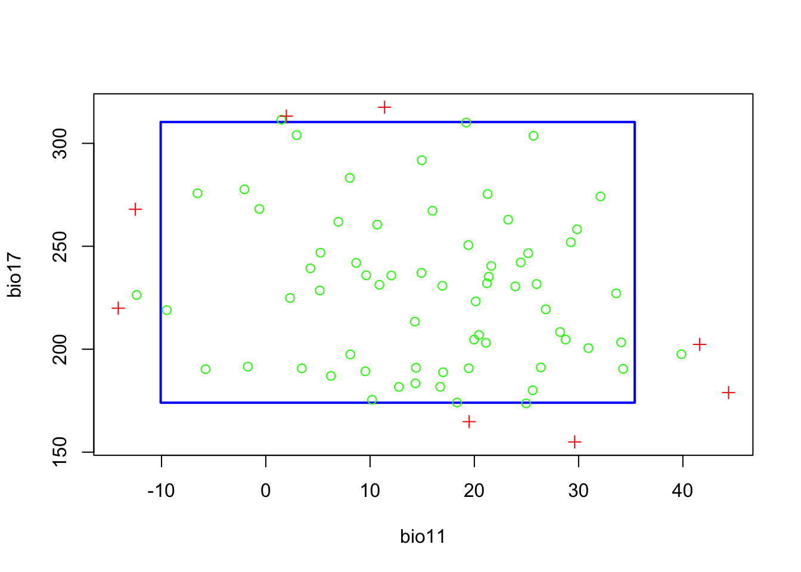
# Now, we plot the response surface:
xyz <- expand.grid(
seq(min(sp_thinned[,my_preds[1]]),max(sp_thinned[,my_preds[1]]),length=50),
seq(min(sp_thinned[,my_preds[2]]),max(sp_thinned[,my_preds[2]]),length=50))
names(xyz) <- my_preds
xyz$z <- predict(m_bc, xyz)
library(RColorBrewer)
cls <- colorRampPalette(rev(brewer.pal(11, 'RdYlBu')))(100)
library(lattice)
wireframe(z ~ bio11 + bio17, data = xyz, zlab = list("Occurrence prob.", rot=90), drape = TRUE, col.regions = cls, scales = list(arrows = FALSE), zlim = c(0, 1), main='BIOCLIM', xlab='bio11', ylab='bio17', screen=list(z = -40, x = -70, y = 3))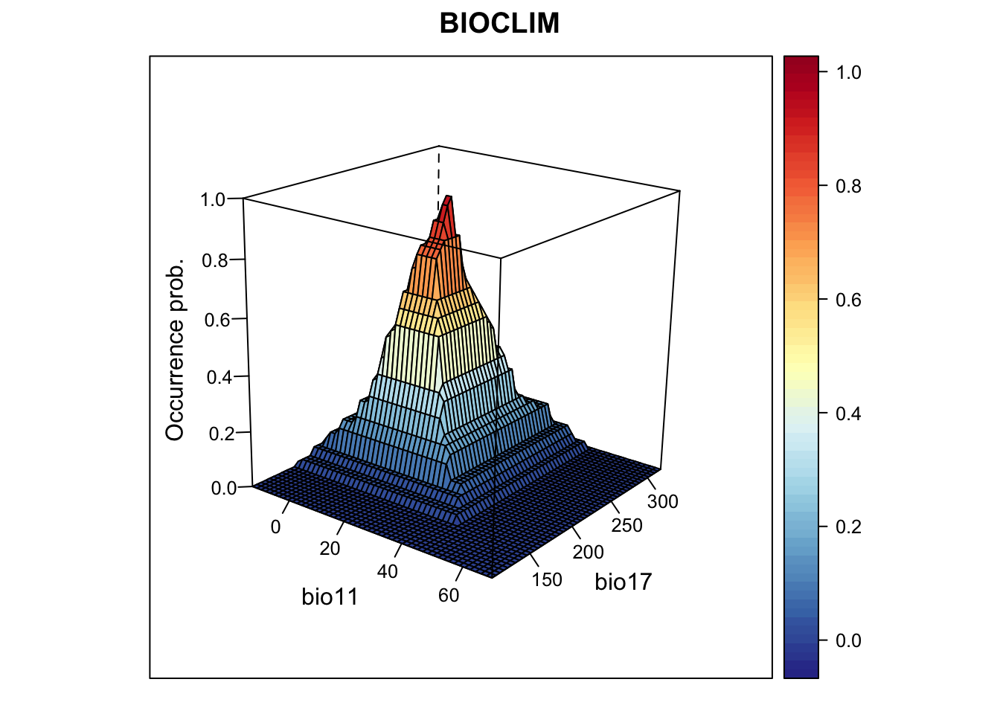
# Plot partial response curves:
par(mfrow=c(1,2))
for (i in 1:2) {
xz <- data.frame(
# Sequence for one predictor:
seq(min(sp_thinned[,my_preds[i]]),max(sp_thinned[,my_preds[i]]),length=50),
# Calculate the mean of the other predictor:
mean(sp_thinned[,my_preds[ ((i)%%2)+1 ]])
)
names(xz) <- c(my_preds[i], my_preds[-i])
xz$z <- predict(m_bc, xz)
plot(xz[,1],xz$z,type='l', xlab=my_preds[i], ylim=c(0,1),ylab='Occurrence probability', main='BIOCLIM')
}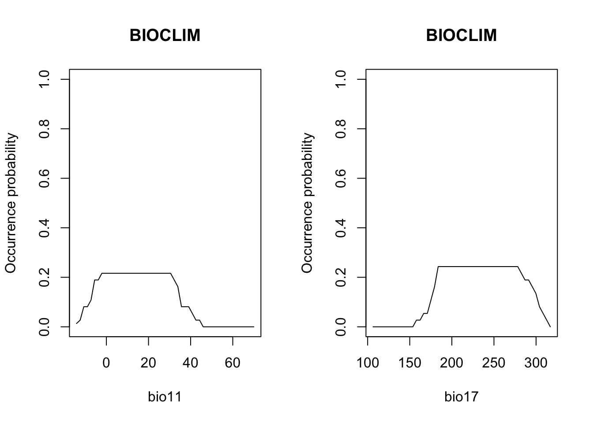
For simplicity, we only use internal validation today, meaning that we evaluate model performance on the training data.
library(PresenceAbsence)
# We define some useful functions for evaluation:
# True Skill Statistic
TSS = function(cmx){
require(PresenceAbsence)
sensitivity(cmx, st.dev=F)+specificity(cmx, st.dev=F)-1
}
# Calculate explained deviance: null prediction is equivalent to the mean prevalence
d.square <- function(obs, pred, family='binomial'){
require(dismo)
if (family=='binomial') pred <- ifelse(pred<.00001,.00001,ifelse(pred>.9999,.9999,pred))
null.pred <- rep(mean(obs), length(obs))
1 - (calc.deviance(obs, pred, family=family)/calc.deviance(obs, null.pred, family=family))
}
# We find a threshold and evaluate the model:
thresh_dat <- data.frame(ID=seq_len(nrow(sp_thinned)),
obs= sp_thinned$Turdus_torquatus,
pred=predict(m_bc, sp_thinned[,my_preds]))
thresh <- optimal.thresholds(DATA= thresh_dat)
cmx_maxSSS <- cmx(DATA= thresh_dat, threshold=thresh[3,2])
pcc(cmx_maxSSS, st.dev=F)## [1] 0.75sensitivity(cmx_maxSSS, st.dev=F)## [1] 0.8378378specificity(cmx_maxSSS, st.dev=F)## [1] 0.7368421TSS(cmx_maxSSS)## [1] 0.5746799auc(thresh_dat, st.dev=F)## [1] 0.8254185d.square(thresh_dat$obs, thresh_dat$pred)## [1] 0.1442497Finally, let’s map the predicted occurrence probabilities across Britain and the predicted presence/absence.
# Map predictions:
r_bc_pred <- r_bc_bin <- predict(m_bc,bio_curr)
values(r_bc_bin) <- ifelse(values(r_bc_pred)>=thresh[3,2], 1, 0)
plot(stack(r_bc_pred, r_bc_bin),main=c('BIOCLIM prob.','BIOCLIM bin.'), axes=F) 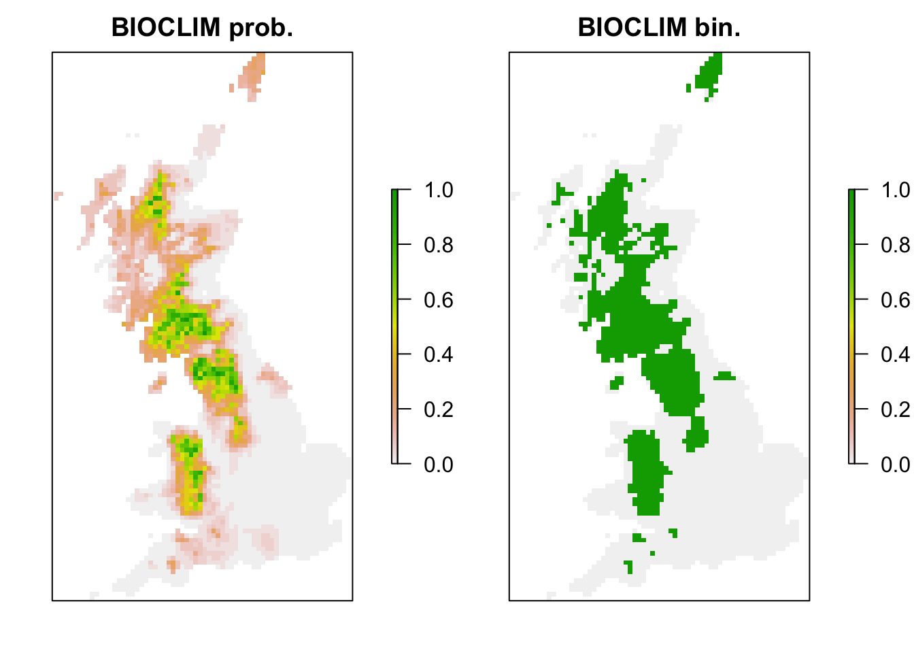
Instead of drawing rectangular envelopes, distance-based methods such as the Domain evaluate the environmental similarity between a “new” site and sites with known presences. Domain uses the Gower distance for assessing similarity.
# Fit Domain model
m_dom <- domain(bio_curr[[my_preds]], sp_thinned[sp_thinned$Turdus_torquatus==1,c('EASTING','NORTHING')])
# Now, we plot the response surface:
xyz$z <- predict(m_dom, xyz)
wireframe(z ~ bio11 + bio17, data = xyz, zlab = list("Occurrence prob.", rot=90), drape = TRUE, col.regions = cls, scales = list(arrows = FALSE), zlim = c(0, 1), main='Domain', xlab='bio11', ylab='bio17', screen=list(z = -40, x = -70, y = 3))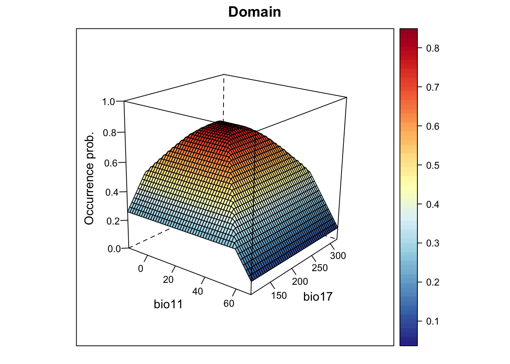
# Plot partial response curves:
par(mfrow=c(1,2))
for (i in 1:2) {
xz <- data.frame(
# Sequence for one predictor:
seq(min(sp_thinned[,my_preds[i]]),max(sp_thinned[,my_preds[i]]),length=50),
# Calculate the mean of the other predictor:
mean(sp_thinned[,my_preds[ ((i)%%2)+1 ]])
)
names(xz) <- c(my_preds[i], my_preds[-i])
xz$z <- predict(m_dom, xz)
plot(xz[,1],xz$z,type='l', xlab=my_preds[i], ylim=c(0,1),ylab='Occurrence probability', main='Domain')
}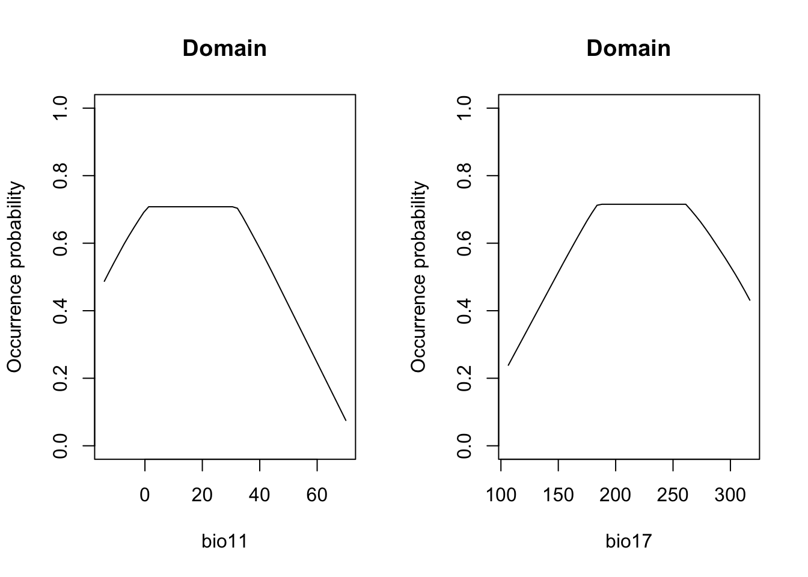
# We find a threshold and evaluate the model:
thresh_dat <- data.frame(ID=seq_len(nrow(sp_thinned)),
obs= sp_thinned$Turdus_torquatus,
pred=predict(m_dom, sp_thinned[,my_preds]))
thresh <- optimal.thresholds(DATA= thresh_dat)
cmx_maxSSS <- cmx(DATA= thresh_dat, threshold=thresh[3,2])
pcc(cmx_maxSSS, st.dev=F)## [1] 0.7341549sensitivity(cmx_maxSSS, st.dev=F)## [1] 0.7162162specificity(cmx_maxSSS, st.dev=F)## [1] 0.7368421TSS(cmx_maxSSS)## [1] 0.4530583auc(thresh_dat, st.dev=F)## [1] 0.7846592d.square(thresh_dat$obs, thresh_dat$pred)## [1] -1.024274# Map predictions:
r_dom_pred <- r_dom_bin <- predict(m_dom,bio_curr[[my_preds]])
values(r_dom_bin) <- ifelse(values(r_dom_pred)>=thresh[3,2], 1, 0)
plot(stack(r_dom_pred, r_dom_bin),main=c('Domain prob.','Domain bin.'), axes=F) 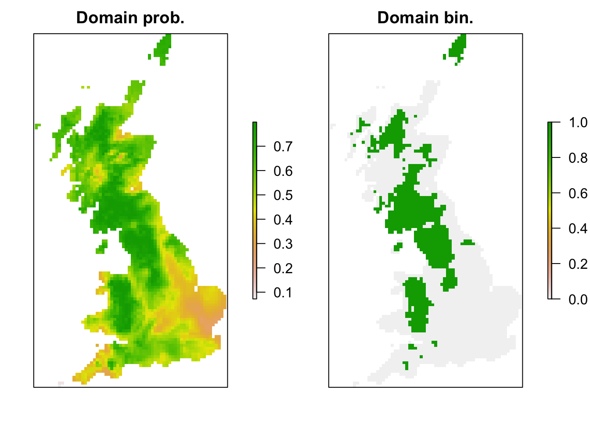
We already know GLMs from pracs 3-4. We can fit linear, quadratic or higher polynomial terms (check poly()) and interactions between predictors.
# Fit GLM
m_glm <- step(glm( as.formula(
paste('Turdus_torquatus ~',paste(my_preds,paste0('+ I(',my_preds,'^2)'),collapse=' + '))),
family='binomial', data=sp_thinned))## Start: AIC=294.78
## Turdus_torquatus ~ bio11 + I(bio11^2) + bio17 + I(bio17^2)
##
## Df Deviance AIC
## - I(bio11^2) 1 285.25 293.25
## <none> 284.78 294.78
## - bio11 1 289.41 297.41
## - I(bio17^2) 1 300.06 308.06
## - bio17 1 303.27 311.27
##
## Step: AIC=293.25
## Turdus_torquatus ~ bio11 + bio17 + I(bio17^2)
##
## Df Deviance AIC
## <none> 285.25 293.25
## - I(bio17^2) 1 301.24 307.24
## - bio17 1 304.69 310.69
## - bio11 1 347.16 353.16summary(m_glm)##
## Call:
## glm(formula = Turdus_torquatus ~ bio11 + bio17 + I(bio17^2),
## family = "binomial", data = sp_thinned)
##
## Deviance Residuals:
## Min 1Q Median 3Q Max
## -1.93427 -0.42588 -0.18586 -0.09024 2.79266
##
## Coefficients:
## Estimate Std. Error z value Pr(>|z|)
## (Intercept) -1.527e+01 3.941e+00 -3.875 0.000107 ***
## bio11 -9.234e-02 1.339e-02 -6.895 5.38e-12 ***
## bio17 1.360e-01 3.494e-02 3.892 9.95e-05 ***
## I(bio17^2) -2.761e-04 7.630e-05 -3.619 0.000296 ***
## ---
## Signif. codes: 0 '***' 0.001 '**' 0.01 '*' 0.05 '.' 0.1 ' ' 1
##
## (Dispersion parameter for binomial family taken to be 1)
##
## Null deviance: 439.54 on 567 degrees of freedom
## Residual deviance: 285.25 on 564 degrees of freedom
## AIC: 293.25
##
## Number of Fisher Scoring iterations: 7# Now, we plot the response surface:
xyz$z <- predict(m_glm, xyz, type='response')
wireframe(z ~ bio11 + bio17, data = xyz, zlab = list("Occurrence prob.", rot=90), drape = TRUE, col.regions = cls, scales = list(arrows = FALSE), zlim = c(0, 1), main='GLM', xlab='bio11', ylab='bio17', screen=list(z = -40, x = -70, y = 3))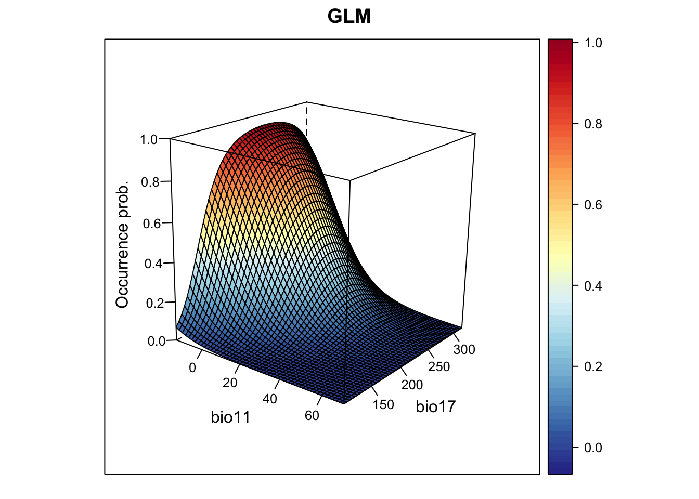
# Plot partial response curves:
par(mfrow=c(1,2))
for (i in 1:2) {
xz <- data.frame(
# Sequence for one predictor:
seq(min(sp_thinned[,my_preds[i]]),max(sp_thinned[,my_preds[i]]),length=50),
# Calculate the mean of the other predictor:
mean(sp_thinned[,my_preds[ ((i)%%2)+1 ]])
)
names(xz) <- c(my_preds[i], my_preds[-i])
xz$z <- predict(m_glm, xz, type='response')
plot(xz[,1],xz$z,type='l', xlab=my_preds[i], ylim=c(0,1),ylab='Occurrence probability', main='GLM')
}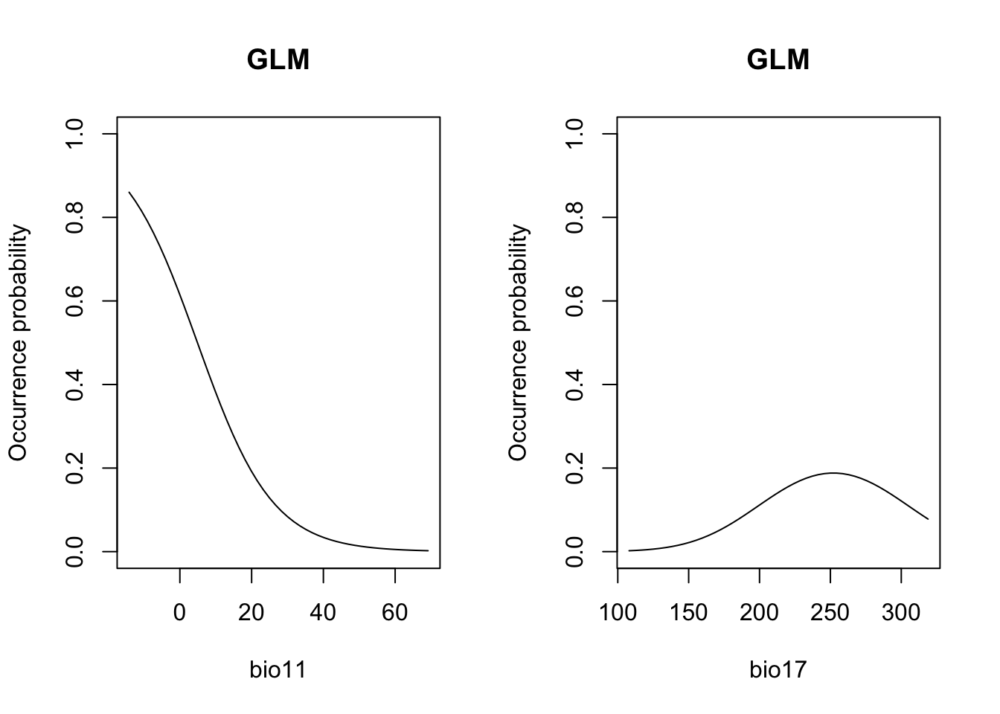
# We find a threshold and evaluate the model:
thresh_dat <- data.frame(ID=seq_len(nrow(sp_thinned)),
obs= sp_thinned$Turdus_torquatus,
pred=predict(m_glm, sp_thinned[,my_preds], type='response'))
thresh <- optimal.thresholds(DATA= thresh_dat)
cmx_maxSSS <- cmx(DATA= thresh_dat, threshold=thresh[3,2])
pcc(cmx_maxSSS, st.dev=F)## [1] 0.7658451sensitivity(cmx_maxSSS, st.dev=F)## [1] 0.9189189specificity(cmx_maxSSS, st.dev=F)## [1] 0.742915TSS(cmx_maxSSS)## [1] 0.6618339auc(thresh_dat, st.dev=F)## [1] 0.8965423d.square(thresh_dat$obs, thresh_dat$pred)## [1] 0.3510327# Map predictions:
UK_dat <- data.frame(rasterToPoints(bio_curr[[my_preds]]))
r_glm_pred <- rasterFromXYZ(cbind(UK_dat[,1:2],predict(m_glm, UK_dat, type='response')))
r_glm_bin <- r_glm_pred
values(r_glm_bin) <- ifelse(values(r_glm_pred)>=thresh[3,2], 1, 0)
plot(stack(r_glm_pred, r_glm_bin),main=c('GLM prob.','GLM bin.'), axes=F) 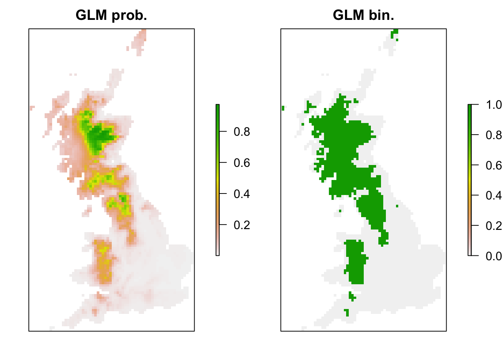
GAMs are a semi-parametric regression method that use data-defined, non-parametric smoothing functions to fit non-linear species-environment relationships. GAMs do not fit the response function to all data points at once, but use a moving-window approach to fit a local smoother to a proportion of the data. Small window sizes will yield highly flexible response shapes while large window sizes will produce less flexible response shapes that are closer to a parametric GLM. Two packages for fitting GAMs are available in R: mgcv and gam. Both allow fitting spline smoother s() while the package gam also allows fitting loess function lo(). The mgcv package allows more control over model fitting and optimization, but here we use the package gam to illustrate differences between loess and splines.
library(gam)
# Fit GAM with different degrees of freedom
m_gamS <- gam( as.formula(
paste('Turdus_torquatus ~',paste(paste0('s(',my_preds,',df=4)'),collapse=' + '))),
family='binomial', data=sp_thinned)
m_gamL <- gam( as.formula(
paste('Turdus_torquatus ~',paste(paste0('lo(',my_preds,')'),collapse=' + '))),
family='binomial', data=sp_thinned)
# Now, we plot the response surface:
xyz$z <- predict(m_gamS, xyz[,1:2], type='response')
wireframe(z ~ bio11 + bio17, data = xyz, zlab = list("Occurrence prob.", rot=90), drape = TRUE, col.regions = cls, scales = list(arrows = FALSE), zlim = c(0, 1), main='GAM (splines)', xlab='bio11', ylab='bio17', screen=list(z = -40, x = -70, y = 3))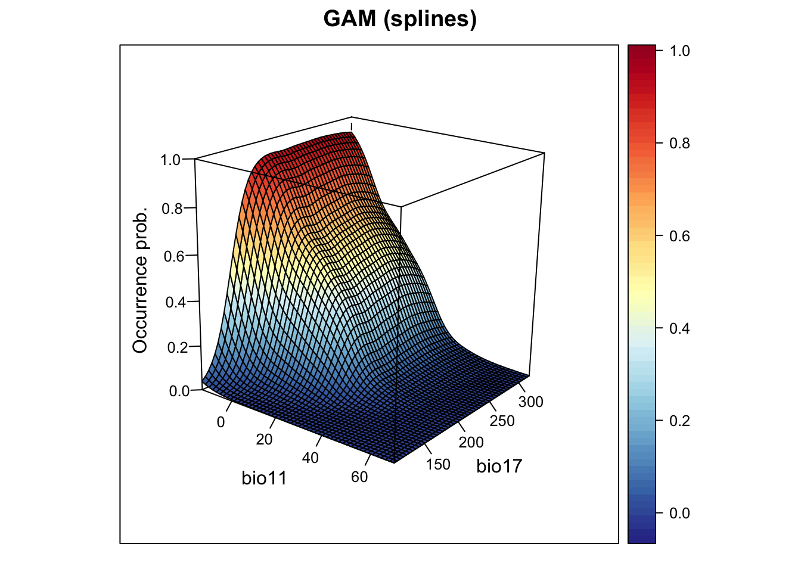
xyz$z <- predict(m_gamL, xyz[,1:2], type='response')
wireframe(z ~ bio11 + bio17, data = xyz, zlab = list("Occurrence prob.", rot=90), drape = TRUE, col.regions = cls, scales = list(arrows = FALSE), zlim = c(0, 1), main='GAM (loess)', xlab='bio11', ylab='bio17', screen=list(z = -40, x = -70, y = 3))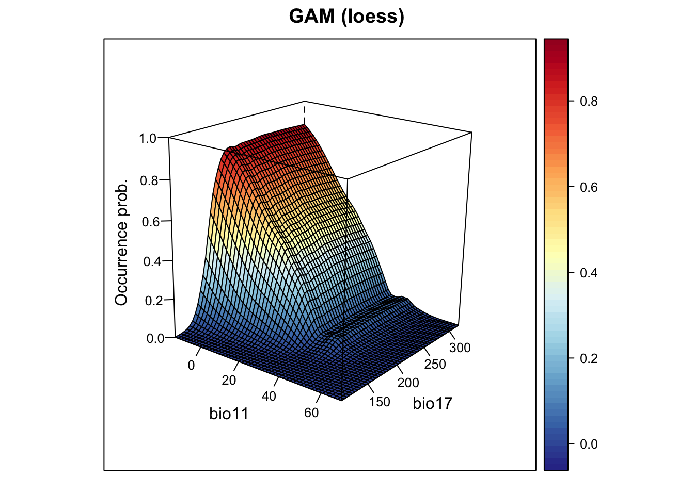
# Plot partial response curves:
par(mfrow=c(1,2))
for (i in 1:2) {
xz <- data.frame(
# Sequence for one predictor:
seq(min(sp_thinned[,my_preds[i]]),max(sp_thinned[,my_preds[i]]),length=50),
# Calculate the mean of the other predictor:
mean(sp_thinned[,my_preds[ ((i)%%2)+1 ]])
)
names(xz) <- c(my_preds[i], my_preds[-i])
xz$z <- predict(m_gamS, newdata=xz, type='response')
plot(xz[,1],xz$z,type='l', xlab=my_preds[i],
ylab='Occurrence probability',ylim=c(0,1), main='GAM')
xz$z <- predict(m_gamL, newdata=xz, type='response')
lines(xz[,1],xz$z,col='red')
legend('topleft',legend=c('spline','loess'),lty='solid',col=c('black','red'),bty='n')
}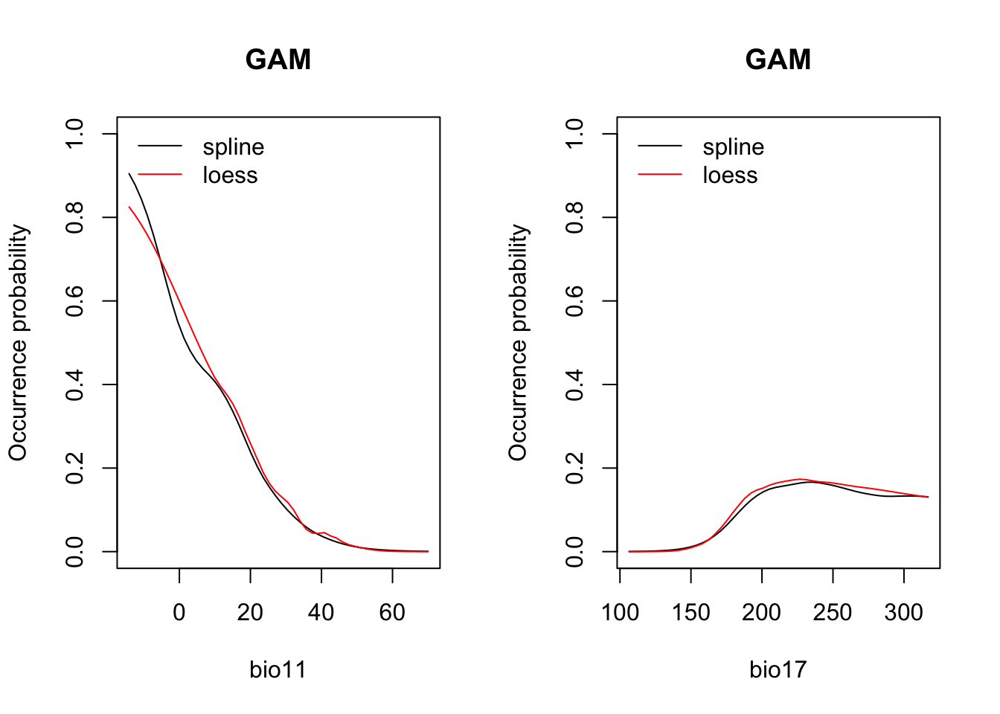
# We find a threshold and evaluate the model:
thresh_dat <- data.frame(ID=seq_len(nrow(sp_thinned)),
obs= sp_thinned$Turdus_torquatus,
pred=predict(m_gamS, sp_thinned[,my_preds], type='response'))
thresh <- optimal.thresholds(DATA= thresh_dat)
cmx_maxSSS <- cmx(DATA= thresh_dat, threshold=thresh[3,2])
pcc(cmx_maxSSS, st.dev=F)## [1] 0.7605634sensitivity(cmx_maxSSS, st.dev=F)## [1] 0.9324324specificity(cmx_maxSSS, st.dev=F)## [1] 0.7348178TSS(cmx_maxSSS)## [1] 0.6672502auc(thresh_dat, st.dev=F)## [1] 0.8991958d.square(thresh_dat$obs, thresh_dat$pred)## [1] 0.3668295# Map predictions:
r_gamS_pred <- rasterFromXYZ(cbind(UK_dat[,1:2],predict(m_gamS, UK_dat, type='response')))
r_gamS_bin <- r_gamS_pred
values(r_gamS_bin) <- ifelse(values(r_gamS_pred)>=thresh[3,2], 1, 0)
plot(stack(r_gamS_pred, r_gamS_bin),main=c('GAM (splines) prob.','GAM (splines) bin.'), axes=F) 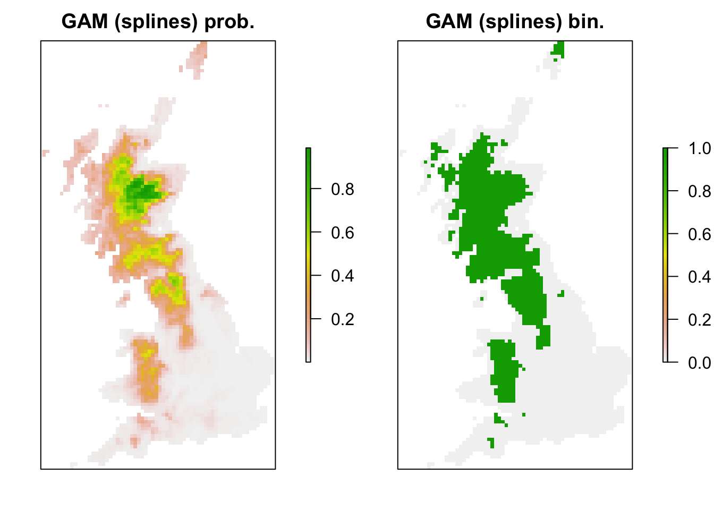
Tasks:
df) and smaller windows sizes for the loess smoother (smaller span will lead to higher flexibility).There are a number of different non-parametric machine-learning methods that are commonly used in SDMs, and new methods are constantly appearing. A few methods like Classification and Regression Trees (CART) and Artificial Neural Networks (ANN) have been around for some time, while other methods such as Boosted Regression Trees (BRTs), Random Forests (RFs) and Maximum Entropy (MaxEnt) have only become popular over the last decade.
CARTs are a recursive partitioning method that aim to divide the data into homogeneous subgroups (Franklin 2010; Guisan, Thuiller, and Zimmermann 2017). They grow a decision tree by repeatedly splitting the data such that the splits help separating presences and absences. Thus, CARTs search along each environmental gradient for those splitting rules (nodes) that best separate the observations. Of course, we could perfectly fit all data by that procedure, which is rarely desirable as it will decrease the bias for the training data but increase the variance for a different sample (the bias-variance tradeoff). Thus, the procedure is basically to grow the tree, stop the tree and prune the tree to find the optimal tree size.
Again, different packages are available for fitting CARTs, e.g. rpart and tree. The package rpart offers better control of model fitting and tree size optimization. It uses internal cross-validation (default xval=10) for evaluating bias-variance tradeoff and optimizing tree size. Another important control parameter is the minimum number of observations (default minsplit=20) that must be available to define a split.
library(rpart)
# Fit CART
m_cart <- rpart( as.formula(
paste('Turdus_torquatus ~',paste(my_preds,collapse=' + '))),
data=sp_thinned, control=rpart.control(minsplit=20,xval=10))
# Have a look at the data splits:
print(m_cart)## n= 568
##
## node), split, n, deviance, yval
## * denotes terminal node
##
## 1) root 568 64.359150 0.13028170
## 2) bio11>=21.40698 463 22.755940 0.05183585
## 4) bio17< 190.4548 334 3.952096 0.01197605 *
## 5) bio17>=190.4548 129 16.899220 0.15503880
## 10) bio11>=35.04177 48 1.916667 0.04166667 *
## 11) bio11< 35.04177 81 14.000000 0.22222220 *
## 3) bio11< 21.40698 105 26.190480 0.47619050
## 6) bio11>=-3.157289 97 23.814430 0.43298970
## 12) bio11>=17.33921 34 7.058824 0.29411760 *
## 13) bio11< 17.33921 63 15.746030 0.50793650
## 26) bio17< 188.7723 11 2.181818 0.27272730 *
## 27) bio17>=188.7723 52 12.826920 0.55769230 *
## 7) bio11< -3.157289 8 0.000000 1.00000000 *plot(m_cart, margin=0.1)
text(m_cart, cex = 0.8)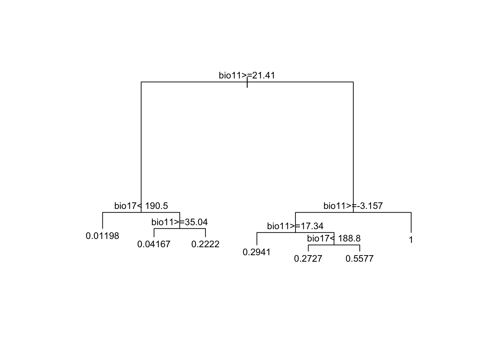
# Now, we plot the response surface:
xyz$z <- predict(m_cart, xyz)
wireframe(z ~ bio11 + bio17, data = xyz, zlab = list("Occurrence prob.", rot=90), drape = TRUE, col.regions = cls, scales = list(arrows = FALSE), zlim = c(0, 1), main='CART', xlab='bio11', ylab='bio17', screen=list(z = -40, x = -70, y = 3))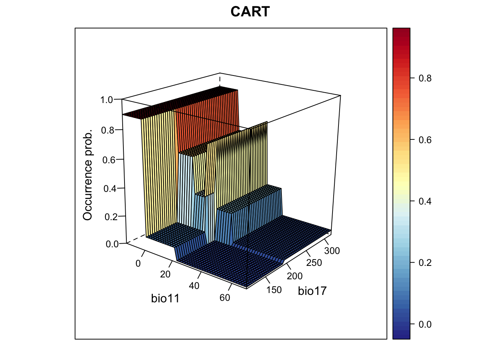
# Plot partial response curves:
par(mfrow=c(1,2))
for (i in 1:2) {
xz <- data.frame(
# Sequence for one predictor:
seq(min(sp_thinned[,my_preds[i]]),max(sp_thinned[,my_preds[i]]),length=50),
# Calculate the mean of the other predictor:
mean(sp_thinned[,my_preds[ ((i)%%2)+1 ]])
)
names(xz) <- c(my_preds[i], my_preds[-i])
xz$z <- predict(m_cart, newdata=xz)
plot(xz[,1],xz$z,type='l', xlab=my_preds[i], ylim=c(0,1),ylab='Occurrence probability', main='CART')
}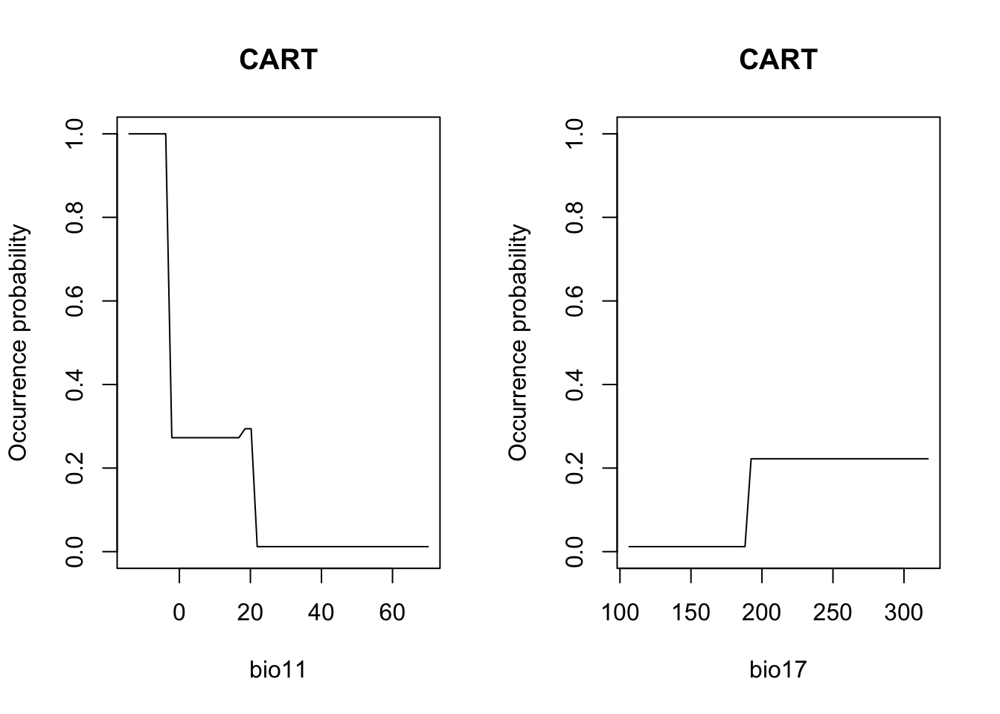
# We find a threshold and evaluate the model:
thresh_dat <- data.frame(ID=seq_len(nrow(sp_thinned)),
obs= sp_thinned$Turdus_torquatus,
pred=predict(m_cart, sp_thinned[,my_preds]))
thresh <- optimal.thresholds(DATA= thresh_dat)
cmx_maxSSS <- cmx(DATA= thresh_dat, threshold=thresh[3,2])
pcc(cmx_maxSSS, st.dev=F)## [1] 0.7816901sensitivity(cmx_maxSSS, st.dev=F)## [1] 0.9189189specificity(cmx_maxSSS, st.dev=F)## [1] 0.7611336TSS(cmx_maxSSS)## [1] 0.6800525auc(thresh_dat, st.dev=F)## [1] 0.8908114d.square(thresh_dat$obs, thresh_dat$pred)## [1] 0.3828342# Map predictions:
r_cart_pred <- rasterFromXYZ(cbind(UK_dat[,1:2],predict(m_cart, UK_dat)))
r_cart_bin <- r_cart_pred
values(r_cart_bin) <- ifelse(values(r_cart_pred)>=thresh[3,2], 1, 0)
plot(stack(r_cart_pred, r_cart_bin),main=c('CART prob.','CART bin.'), axes=F) 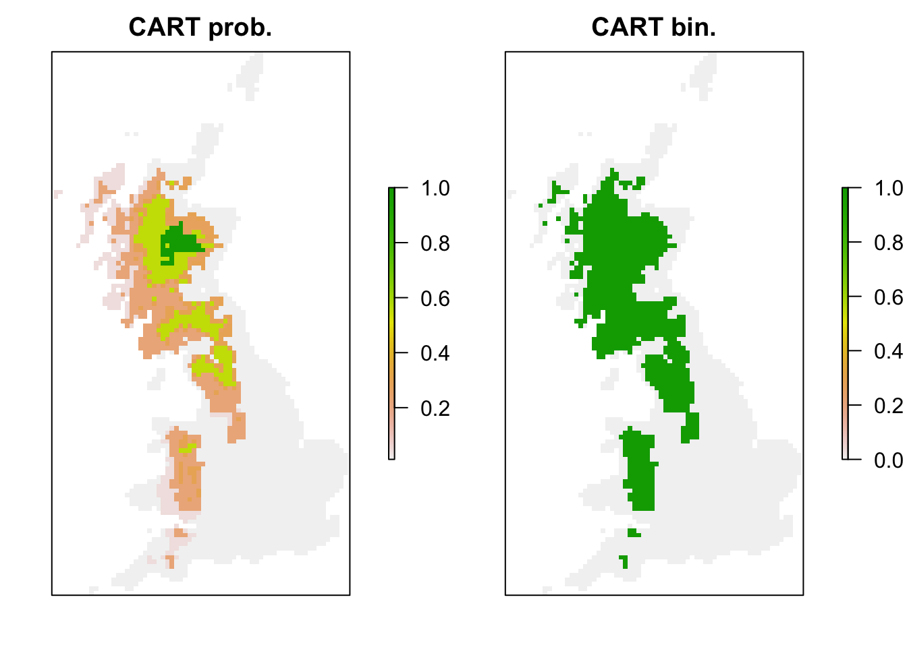
Tasks:
rpart and see how that affects the size of the tree and the response surface.Regression models or classification models can be affected by local optima and noise in the data. They usually have low bias (fit the training data very well) but high variance (noisy/poorer performance when predicting to non-training data). Model averaging has been proposed as possible solution (Hastie, Tibshirani, and Friedman 2009). In recent years, so-called bagging and boosting methods have been developed for combining or averaging different models. Random Forests use a bagging procedure for averaging the outputs of a multitude of different CARTs. Bagging stands for “bootstrap aggregation”. Basically, we fit many CARTs to bootstrapped samples of the training data and then either average the results in case of regression trees or make a simple vote in case of classification trees (committee averaging)(Hastie, Tibshirani, and Friedman 2009; Guisan, Thuiller, and Zimmermann 2017). An important features of Random Forests are the out-of-bag samples, which means that the predictions/fit for a specific data point is only derived from averaging trees that did not include this data point during tree growing. Thus, the output of Random Forests is essentially cross-validated. Random Forests estimate variable importance by a permutation procedure, which measures for each variable the drop in mean accuracy when this variables is permutated.
library(randomForest)
# Fit RF
m_rf <- randomForest( x=sp_thinned[,my_preds], y=as.factor(sp_thinned$Turdus_torquatus),
ntree=1000, importance =T)
# Variable importance:
importance(m_rf,type=1)## MeanDecreaseAccuracy
## bio11 26.76071
## bio17 13.42305varImpPlot(m_rf)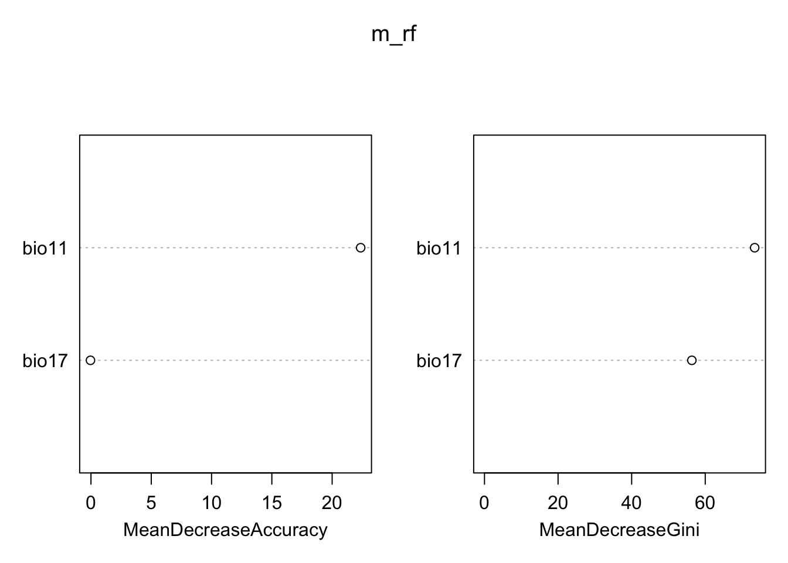
# Look at single trees:
head(getTree(m_rf,1,T))## left daughter right daughter split var split point status prediction
## 1 2 3 bio11 26.0019367 1 <NA>
## 2 4 5 bio17 209.0700069 1 <NA>
## 3 6 7 bio17 201.9339160 1 <NA>
## 4 8 9 bio11 -2.3971875 1 <NA>
## 5 10 11 bio11 -0.1428436 1 <NA>
## 6 12 13 bio11 26.5119974 1 <NA># Now, we plot the response surface:
xyz$z <- predict(m_rf, xyz, type='prob')[,2]
wireframe(z ~ bio11 + bio17, data = xyz, zlab = list("Occurrence prob.", rot=90), drape = TRUE, col.regions = cls, scales = list(arrows = FALSE), zlim = c(0, 1), main='Random Forest', xlab='bio11', ylab='bio17', screen=list(z = -40, x = -70, y = 3))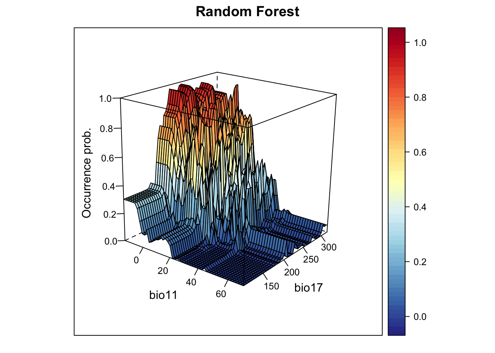
# Plot partial response curves:
par(mfrow=c(1,2))
for (i in 1:2) {
xz <- data.frame(
# Sequence for one predictor:
seq(min(sp_thinned[,my_preds[i]]),max(sp_thinned[,my_preds[i]]),length=50),
# Calculate the mean of the other predictor:
mean(sp_thinned[,my_preds[ ((i)%%2)+1 ]])
)
names(xz) <- c(my_preds[i], my_preds[-i])
xz$z <- predict(m_rf, newdata=xz, type='prob')[,2]
plot(xz[,1],xz$z,type='l', xlab=my_preds[i], ylim=c(0,1),ylab='Occurrence probability', main='Random Forest')
}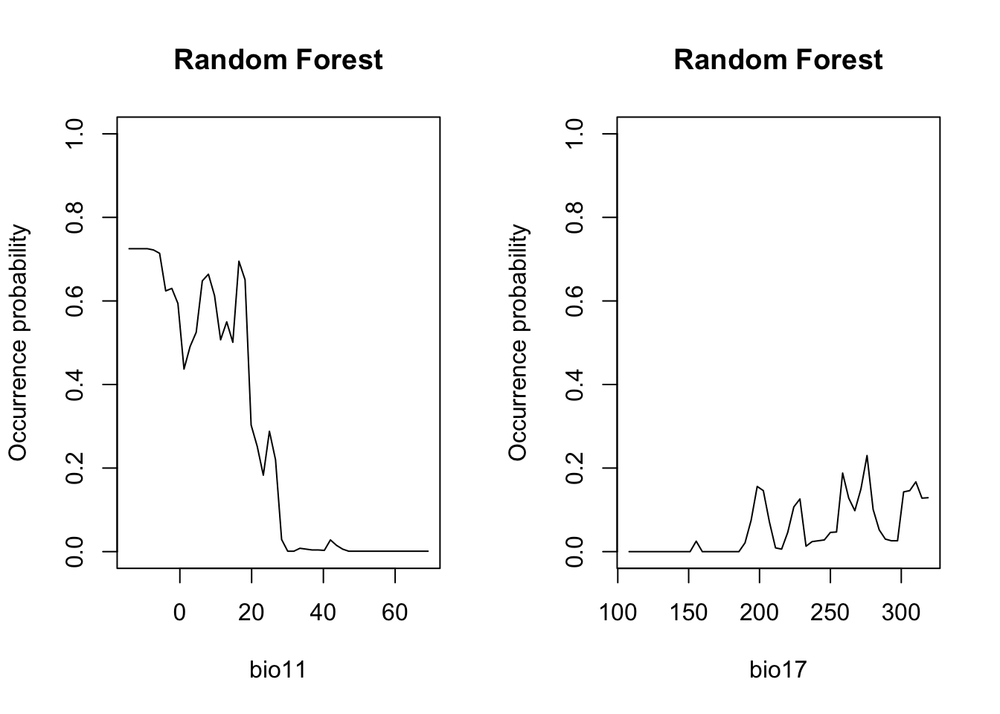
# We find a threshold and evaluate the model:
thresh_dat <- data.frame(ID=seq_len(nrow(sp_thinned)),
obs= sp_thinned$Turdus_torquatus,
pred=predict(m_rf, sp_thinned[,my_preds], type='prob')[,2])
thresh <- optimal.thresholds(DATA= thresh_dat)
cmx_maxSSS <- cmx(DATA= thresh_dat, threshold=thresh[3,2])
pcc(cmx_maxSSS, st.dev=F)## [1] 1sensitivity(cmx_maxSSS, st.dev=F)## [1] 1specificity(cmx_maxSSS, st.dev=F)## [1] 1TSS(cmx_maxSSS)## [1] 1auc(thresh_dat, st.dev=F)## [1] 1d.square(thresh_dat$obs, thresh_dat$pred)## [1] 0.8185528# Map predictions:
r_rf_pred <- rasterFromXYZ(cbind(UK_dat[,1:2],predict(m_rf, UK_dat,type='prob')[,2]))
r_rf_bin <- r_rf_pred
values(r_rf_bin) <- ifelse(values(r_rf_pred)>=thresh[3,2], 1, 0)
plot(stack(r_rf_pred, r_rf_bin),main=c('RF prob.','RF bin.'), axes=F) 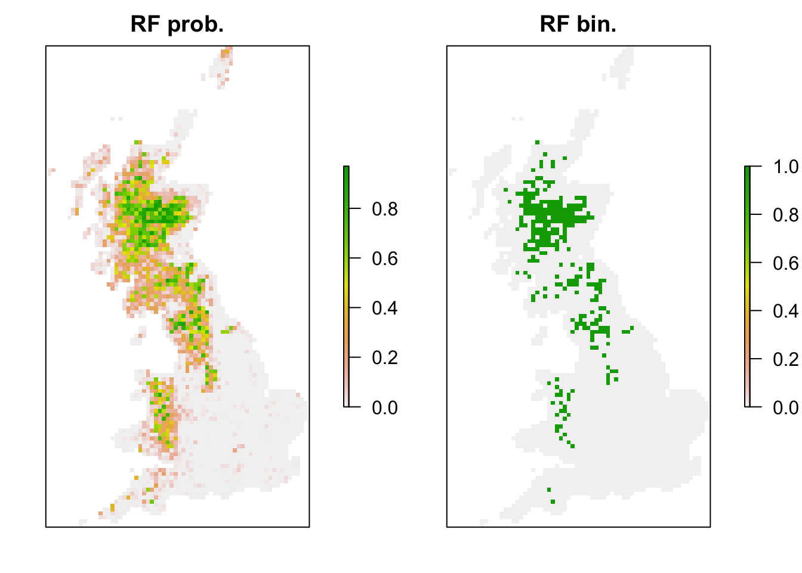
Tasks:
randomForest, for example the nodesize.Boosting is another averaging/ensemble approach for improving the predictive performance of models (Hastie, Tibshirani, and Friedman 2009; Guisan, Thuiller, and Zimmermann 2017). Boosting of CARTS is known under different names including Gradient Boosting Machine (GBM), Generalised Boosted Regression Model (GBM) and Boosted Regression Trees (BRTs) among others. In R it is available in the package gbm with some additional functions from Elith, Leathwick, and Hastie (2008) provided in the dismo package. Elith, Leathwick, and Hastie (2008) also provide a working guide for using BRTs in species distribution modelling. Unlike Random Forests, BRTs iteratively fit relatively simple trees by putting emphasis on observations fitted poorly by the previous trees (by fitting the new tree to the residuals of the previous tree). The final BRT can be though of as linear combination of all trees, similar to a regression model where each term is a single tree (Elith, Leathwick, and Hastie 2008). Thereby each tree is shrunk by the learning rate (the shrinkage parameter, typically <1), which determines how much weight is given to single trees. Generally, slower learning (meaning smaller learning rates) are preferable. Similarly to Random Forests, only a subset of the data (the bag fraction) is used for fitting consecutive trees (but in contrast to Random Forests, the subsets are sampled without replacement and thus constitute real data splits). This bag fraction should typically range 0.5-0.75 (Elith, Leathwick, and Hastie 2008). The tree complexity controls the interaction depth; 1 means only tree stumps (with two terminal nodes) are fitted, 2 means a model with up to two-way interactions etc. In the regular gbm()function, you have to define the maximum number of trees fitted. Elith, Leathwick, and Hastie (2008) recommend fitting at least 1000 trees. However, you want to be careful not to overfit the model by fitting too many trees. The dismo package provides the function gbm.step that selects the optimum number of trees based on the reduction in deviance achieved by adding a tree while predicting to the hold-out data (1-bag fraction). If the optimal number of trees estimated by the model is below 1000, you should decrease your learning rate; if it is above 10000, you should increase you learning rate. A tutorial on BRTs is contained in the dismo package: vignette('brt')
library(gbm)
# Fit BRT
m_brt <- gbm.step(data = sp_thinned,
gbm.x = my_preds,
gbm.y = 'Turdus_torquatus',
family = 'bernoulli',
tree.complexity = 2,
bag.fraction = 0.75,
learning.rate = 0.001,
verbose=F)##
##
## GBM STEP - version 2.9
##
## Performing cross-validation optimisation of a boosted regression tree model
## for NA and using a family of bernoulli
## Using 568 observations and 2 predictors
## creating 10 initial models of 50 trees
##
## folds are stratified by prevalence
## total mean deviance = 0.7738
## tolerance is fixed at 8e-04
## now adding trees...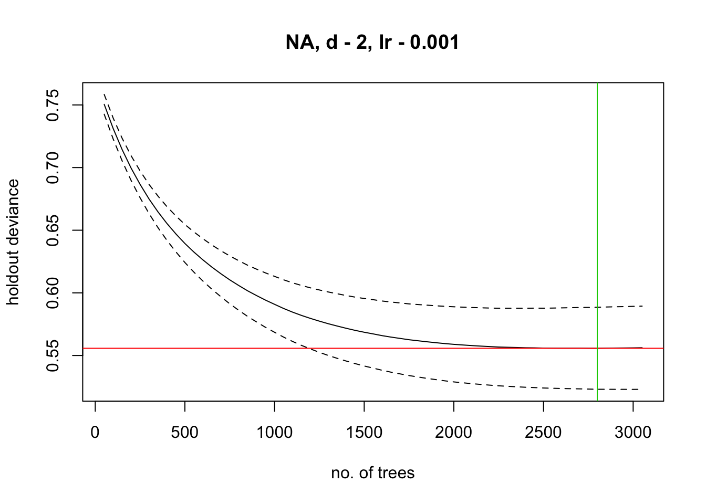
# Variable importance:
m_brt$contributions## var rel.inf
## bio11 bio11 77.10221
## bio17 bio17 22.89779# Interactions (not very meaningful here with only 2 predictors):
gbm.interactions(m_brt)$interactions## bio11 bio17
## bio11 0 10.77
## bio17 0 0.00gbm.interactions(m_brt)$rank.list## var1.index var1.names var2.index var2.names int.size
## 1 2 bio17 1 bio11 10.77
## 2 3 <NA> 0 0.00# dismo provides some build-in functions for plotting response:
gbm.plot(m_brt, n.plots=2, write.title = FALSE)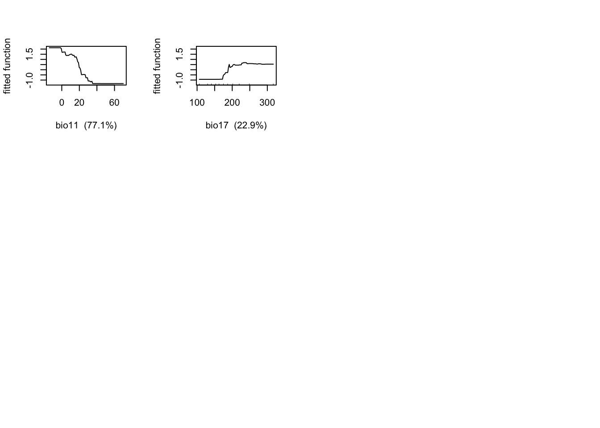
gbm.plot.fits(m_brt)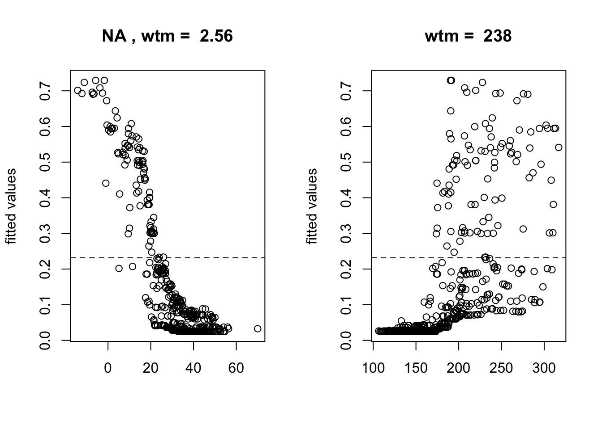
# Now, we plot the response surface:
xyz$z <- predict.gbm(m_brt, xyz, n.trees=m_brt$gbm.call$best.trees, type="response")
wireframe(z ~ bio11 + bio17, data = xyz, zlab = list("Occurrence prob.", rot=90), drape = TRUE, col.regions = cls, scales = list(arrows = FALSE), zlim = c(0, 1), main='Boosted regression trees', xlab='bio11', ylab='bio17', screen=list(z = -40, x = -70, y = 3))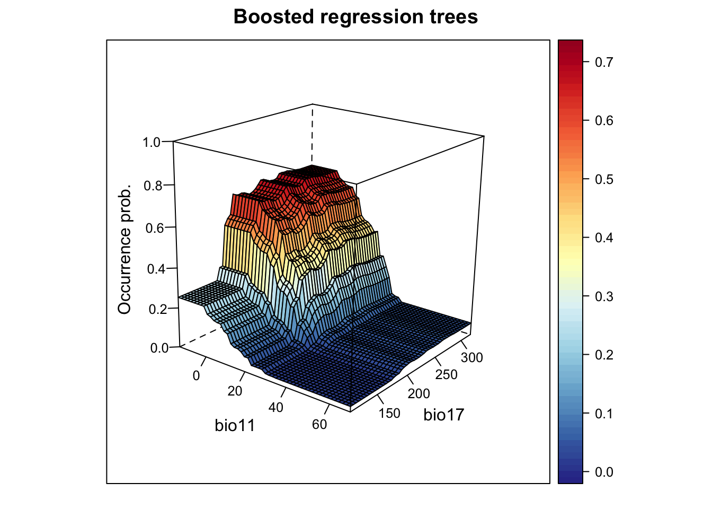
# Plot partial response curves:
par(mfrow=c(1,2))
for (i in 1:2) {
xz <- data.frame(
# Sequence for one predictor:
seq(min(sp_thinned[,my_preds[i]]),max(sp_thinned[,my_preds[i]]),length=50),
# Calculate the mean of the other predictor:
mean(sp_thinned[,my_preds[ ((i)%%2)+1 ]])
)
names(xz) <- c(my_preds[i], my_preds[-i])
xz$z <- predict.gbm(m_brt, xz, n.trees=m_brt$gbm.call$best.trees, type="response")
plot(xz[,1],xz$z,type='l', xlab=my_preds[i], ylim=c(0,1),ylab='Occurrence probability', main='Boosted regression tree')
}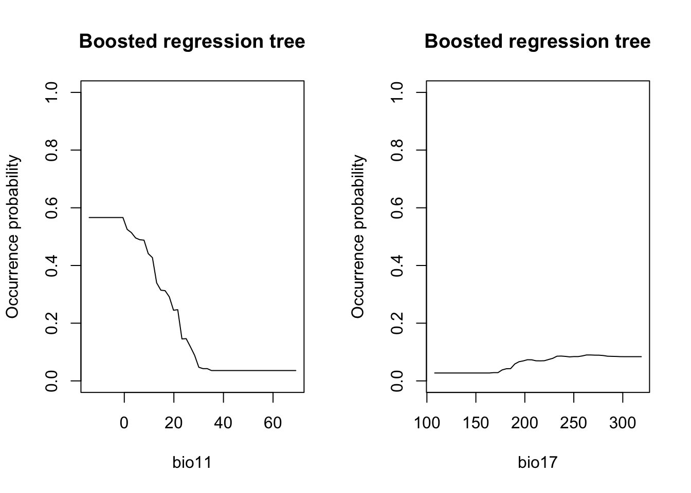
# We find a threshold and evaluate the model:
thresh_dat <- data.frame(ID=seq_len(nrow(sp_thinned)),
obs= sp_thinned$Turdus_torquatus,
pred=predict.gbm(m_brt, sp_thinned[,my_preds], n.trees=m_brt$gbm.call$best.trees, type="response"))
thresh <- optimal.thresholds(DATA= thresh_dat)
cmx_maxSSS <- cmx(DATA= thresh_dat, threshold=thresh[3,2])
pcc(cmx_maxSSS, st.dev=F)## [1] 0.7869718sensitivity(cmx_maxSSS, st.dev=F)## [1] 0.9324324specificity(cmx_maxSSS, st.dev=F)## [1] 0.7651822TSS(cmx_maxSSS)## [1] 0.6976146auc(thresh_dat, st.dev=F)## [1] 0.9142959d.square(thresh_dat$obs, thresh_dat$pred)## [1] 0.3697972# Map predictions:
r_brt_pred <- rasterFromXYZ(cbind(UK_dat[,1:2],predict.gbm(m_brt, UK_dat,n.trees=m_brt$gbm.call$best.trees, type="response")))
r_brt_bin <- r_brt_pred
values(r_brt_bin) <- ifelse(values(r_brt_pred)>=thresh[3,2], 1, 0)
plot(stack(r_brt_pred, r_brt_bin),main=c('BRT prob.','BRT bin.'), axes=F) 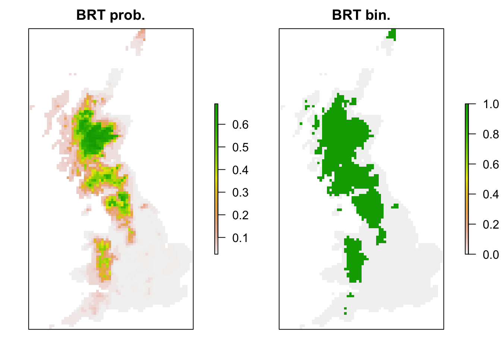
In recent years, maximum entropy modelling of species distributions has become very popular and proved as one of the best-performing methods in model comparisons Elith et al. (2006). The implementation Maxent (Phillips, Anderson, and Schapire 2006; Elith et al. 2011; Merow, Smith, and Silander Jr 2013) now constitutes the most widely used SDM algorithm. It was originally offered with a stand-alone Java package with user interface (possibly one reasons for its popularity). Since a couple of years, some packages like dismo have build-in functions to communicate with this Maxent programme. Very recently, Steven Phillips (“Mr. Maxent”) introduced a true R version of Maxent, the maxnet package.
Maxent is a presence-only method, but unlike profile methods it uses background data (where presence is unknown) against which it contrasts the observed presences. Elith et al. (2011) provide a simplified explanation of Maxent (while the original paper by Phillips, Anderson, and Schapire (2006) focused on explanations from machine-learning perspective) stating that Maxent aims to minimise the relative entropy between the probability density of presences and the probability density of the environment estimated in environmental (not geographic!) space. The density of available background data in environmental/covariate space can be regarded as the null model that assumes that the species will occupy environmental conditions proportional to their relative availability in the landscape (Guisan, Thuiller, and Zimmermann 2017). Maxent allows fitting very complex, highly non-linear response shapes (Merow, Smith, and Silander Jr 2013), defined by so-called feature classes. Maxent currently recognises six features classes, which are described in more detail by Elith et al. (2011) and Merow, Smith, and Silander Jr (2013): linear, product, quadratic, hinge, threshold and categorical. We already know linear and quadratic features from GLMs. Products allow simple interactions between all possible pair-wise combinations of predictor variables. Thresholds allow a step in the fitted function (as we have seen in CARTs) and make a continuous predictor binary assigning 0 below the threshold and 1 above the threshold. Hinge features are similar to thresholds only that they do not fit abrupt steps but a change in the gradient of the response (a bit like piecewise linear splines). Categorical features split a predictor with \(n\) categories (such as land cover) into \(n\) binary features assigning 1 when the feature is expressed and 0 otherwise. If the data contain more than 80 presences, then Maxent will by default use all feature classes in model fitting (otherwise it will automatically determine the number of features based on the number of presences). This can easily lead to more features that are explored in the model than actual presences (Merow, Smith, and Silander Jr 2013). Of course, users can also specify features themselves. Generally, the selection of features should be guided by ecological plausibility and be considered during model conceptualisation. During model fitting, Maxent will select features based on regularization (trading-off likelihood and model complexity) to avoid overfitting.
As the density of presence points in environmental space is contrasted against all available environments, choosing the background data can be quite crucial in Maxent and should be guided by the spatial scale of the ecological question (Merow, Smith, and Silander Jr 2013). For example, the geographic extent of background data should only encompass areas that are accessible by dispersal and which the species is equally likely to reach. If there is reason to assume that the presence data are spatially biased, then this should also be considered when deriving background data, for example by inducing the same spatial bias in the background (Kramer-Schadt et al. 2013).
library(maxnet)
# Fit Maxent
m_maxent <- maxnet(p=sp_thinned$Turdus_torquatus, data=sp_thinned[,my_preds],
maxnet.formula(p=sp_thinned$Turdus_torquatus, data=sp_thinned[,my_preds], classes="lqpht"))
# Now, we plot the response surface:
xyz$z <- predict(m_maxent, xyz, type="logistic")
wireframe(z ~ bio11 + bio17, data = xyz, zlab = list("Occurrence prob.", rot=90), drape = TRUE, col.regions = cls, scales = list(arrows = FALSE), zlim = c(0, 1), main='Maxent', xlab='bio11', ylab='bio17', screen=list(z = -40, x = -70, y = 3))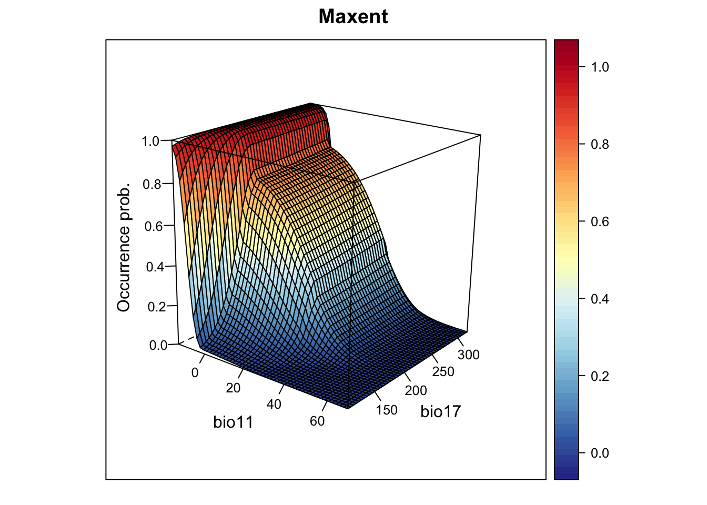
# Plot partial response curves:
par(mfrow=c(1,2))
for (i in 1:2) {
xz <- data.frame(
# Sequence for one predictor:
seq(min(sp_thinned[,my_preds[i]]),max(sp_thinned[,my_preds[i]]),length=50),
# Calculate the mean of the other predictor:
mean(sp_thinned[,my_preds[ ((i)%%2)+1 ]])
)
names(xz) <- c(my_preds[i], my_preds[-i])
xz$z <- predict(m_maxent, xz, type="logistic")
plot(xz[,1],xz$z,type='l', xlab=my_preds[i], ylim=c(0,1),ylab='Occurrence probability', main='Maxent')
}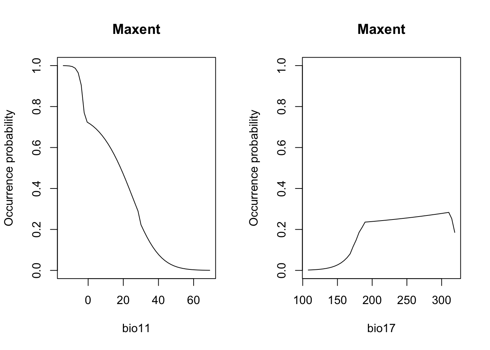
# We find a threshold and evaluate the model:
thresh_dat <- data.frame(ID=seq_len(nrow(sp_thinned)),
obs= sp_thinned$Turdus_torquatus,
pred=predict(m_maxent, sp_thinned[,my_preds], type="logistic"))
thresh <- optimal.thresholds(DATA= thresh_dat)
cmx_maxSSS <- cmx(DATA= thresh_dat, threshold=thresh[3,2])
pcc(cmx_maxSSS, st.dev=F)## [1] 0.75sensitivity(cmx_maxSSS, st.dev=F)## [1] 0.9459459specificity(cmx_maxSSS, st.dev=F)## [1] 0.7206478TSS(cmx_maxSSS)## [1] 0.6665937auc(thresh_dat, st.dev=F)## [1] 0.8985392d.square(thresh_dat$obs, thresh_dat$pred)## [1] 0.2955841# Map predictions:
r_maxent_pred <- rasterFromXYZ(cbind(UK_dat[,1:2],predict(m_maxent, UK_dat, type="logistic")))
r_maxent_bin <- r_maxent_pred
values(r_maxent_bin) <- ifelse(values(r_maxent_pred)>=thresh[3,2], 1, 0)
plot(stack(r_maxent_pred, r_maxent_bin),main=c('Maxent prob.','Maxent bin.'), axes=F) 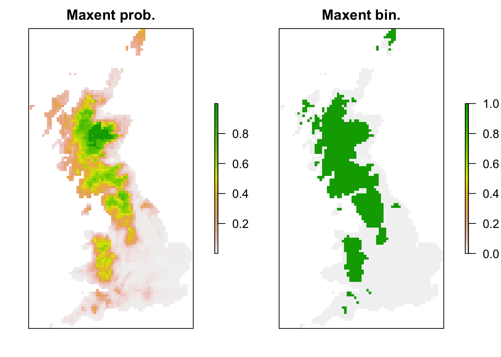
Tasks:
Aiello-Lammens, Matthew E., Robert A. Boria, Aleksandar Radosavljevic, Bruno Vilela, and Robert P. Anderson. 2015. “spThin: An R Package for Spatial Thinning of Species Occurrence Records for Use in Ecological Niche Models.” Ecography 38 (5). Wiley: 541–45. https://doi.org/10.1111/ecog.01132.
Araujo, Miguel B., and Mark New. 2007. “Ensemble Forecasting of Species Distributions.” Trends in Ecology and Evolution 22: 42–47.
Booth, Trevor H., Henry A. Nix, John R. Busby, and Michael F. Hutchinson. 2014. “Bioclim: The First Species Distribution Modelling Package, Its Early Applications and Relevance to Most Current Maxent Studies.” Diversity and Distributions 20: 1–9.
Buisson, Laetitia, Wilfried Thuiller, Nicolas Casajus, Sovan Lek, and Gael Grenouillet. 2010. “Uncertainty in Ensemble Forecasting of Species Distribution.” Global Change Biology 16: 1145–57.
Dormann, C. F., J. Elith, S. Bacher, C. Buchmann, G. Carl, G. Carre, J. R. Garcia Marquez, et al. 2013. “Collinearity: A Review of Methods to Deal with It and a Simulation Study Evaluating Their Performance.” Ecography 36: 27–46.
Elith, J., C. H. Graham, R. P. Anderson, M. Dudik, S. Ferrier, A. Guisan, R. J. Hijmans, et al. 2006. “Novel Methods Improve Prediction of Species’ Distribution from Occurence Data.” Ecography 29: 129–51.
Elith, J., J. R. Leathwick, and T. Hastie. 2008. “A Working Guide to Boosted Regression Trees.” Journal of Animal Ecology 77: 802–13.
Elith, J., S. J. Phillips, T. Hastie, M. Dudik, Y. E. Chee, and C. J. Yates. 2011. “A Statistical Explanation of Maxent for Ecologists.” Diversity and Distributions 17: 43–57.
Franklin, J. 2010. Mapping Species Distributions: Spatial Inference and Prediction. Cambride University Press.
Gillings, Simon, Dawn E. Balmer, Brian J. Caffrey, Iain S. Downie, David W. Gibbons, Peter C. Lack, James B. Reid, J. Tim R. Sharrock, Robert L. Swann, and Robert J. Fuller. 2019. “Breeding and Wintering Bird Distributions in Britain and Ireland from Citizen Science Bird Atlases.” Global Ecology and Biogeography 28 (7): 866–74. https://doi.org/10.1111/geb.12906.
Guisan, A., W. Thuiller, and N. E. Zimmermann. 2017. Habitat Suitability and Distribution Models with Applications in R. Cambride University Press.
Hastie, T., R. Tibshirani, and J. Friedman. 2009. The Elements of Statistical Learning. Springer.
Hutchinson, G. E. 1957. “Concluding Remarks, Cold Spring Harbor Symposium.” Quantitative Biology 22: 415–27.
Kramer-Schadt, Stephanie, Juergen Niedballa, John D. Pilgrim, Boris Schroeder, Jana Lindenborn, Vanessa Reinfelder, Milena Stillfried, et al. 2013. “The Importance of Correcting for Sampling Bias in Maxent Species Distribution Models.” Diversity and Distributions 19: 1366–79.
Merow, C., M. J. Smith, and J. A. Silander Jr. 2013. “A Practical Guide to Maxent for Modeling Species’ Distributions: What It Does, and Why Inputs and Settings Matter.” Ecography 36: 1058–69.
Phillips, S. J., R. P. Anderson, and R. E. Schapire. 2006. “Maximum Entropy Modeling of Species Geographic Distributions.” Ecological Modelling 190: 231–59.
Thuiller, W., B. Lafourcade, R. Engler, and M. B. Araujo. 2009. “BIOMOD - a Platform for Ensemble Forecasting of Species Distributions.” Ecography 32: 369–73.